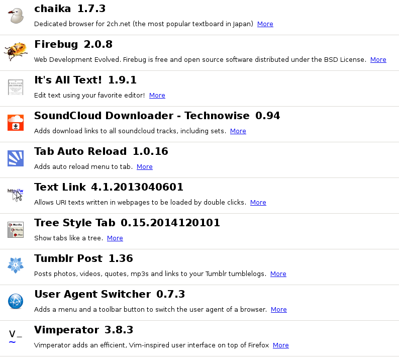

Tue Mar 17 16:42:34 JST 2015
vim で編集しながら途中経過を監視したい
これらはvimで編集しながらも逐一、途中経過をコンパイル (または変換) して、 その結果を眺めたい
markdown
pandoc を用いて、htmlまたはpdfに変換したい
gnuplot
png画像を出力させたい
dot言語
png画像を出力させたいgraphviz パッケージをいれると vimdot が付いてくるので、
作った
# watch. coffee
fs = require 'fs'
path = require 'path'
socket_io = require 'socket.io'
http = require 'http'
express = require 'express'
# make server
app = express()
server = http. Server app
io = socket_io server
app. get '/' , (req, res) ->
res. writeHead 200 , 'Content-Type' : 'text/html'
res. end '''
< title> preview</ title>
< script src= "/socket.io/socket.io.js" ></ script>
< section>< div id= 'win' ></ div>
< script>
var socket = io. connect("http://127.0.0.1" );
socket. on('change' , function (data ) {
win. innerHTML = data ;
});
</ script>
'''
app. get / local\/.*/ , (req, res) ->
filename =
req. url
. replace /^ \/ local\// , ''
. replace / \?.*$/ , ''
res. sendFile path. resolve filename
server. listen 80 , (-> )
io. listen server
# read configure
conf = require "./#{process.argv[2]}.coffee"
# socket
gsocket = false
emit = ->
unless gsocket
return
console. log 'emit' , gsocket. id
conf. compile (err, data ) ->
throw err if err
console. log data
gsocket. emit 'change' , data
io. sockets. on 'connection' , (socket) ->
gsocket = socket
do emit
# watch the file
fs. exists conf. srcfile, (bl) ->
unless bl
console. log "#{conf.srcfile} not exists"
process. exit 0
fs. watchFile conf. srcfile, {interval: 300 }, (event) ->
console. log event
do emit別途、監視対象のファイルと、それをどう処理するかを書いた設定ファイルを用意する
gnuplot.coffee
{exec} = require 'child_process'
srcfile = 'test.plt'
compile = (cont) ->
exec "gnuplot #{srcfile}" , (err) ->
console. warn err if err
cont err, "<img src=local/test.png?#{Math.random()}>"
module . exports =
srcfile: srcfile
compile: compile
src=local/hoge/fuga で path.resolvec 'hoge/fuga' を返すキャッシュが用意に効いてしまうので ?Math.random() をつける
dot.coffee
{exec} = require 'child_process'
srcfile = './test.dot'
compile = (cont) ->
exec 'dot -Tpng test.dot > test.png' , (err) ->
console. warn err if err
cont err, "<img src=local/test.png?#{Math.random()}>"
module . exports =
srcfile: srcfile
compile: compilepython.coffee
fs = require 'fs'
{exec} = require 'child_process'
srcfile = './test.py'
compile = (cont) ->
exec "python #{srcfile} > out" , (err) ->
console. warn err if err
fs. readFile './out' , 'utf8' , (err, data ) ->
throw err if err
cont false, data . replace / \n/ g, '<br>'
module . exports =
srcfile: srcfile
compile: compileusage
watch.coffee と conf.coffee と、監視対象ファイルが全部同じディレクトリにあることにしてる
sudo coffee watch.coffee conf例えば、python.coffee なら
touch test.py
sudo coffee watch.coffee pythonとこうして、 別な窓で test.py を編集するpython test.py > out が走る
コンパイルの結果は、 ブラウザで http://127.0.0.1/ を開くことで確認する
他
fs.watch と fs.watchFile とがあって、 二つとも目的は同じであるfs.watch は明らかに信用できない挙動であった
こんだけならわざわざ、こんなsocket.ioまで使って面倒なことしないでも
Fri Mar 13 23:55:32 JST 2015
頭の良い人間にならなきゃいけない。
何はともかく、確かな知識と、十分な経験だと思う
Tue Mar 3 14:20:26 JST 2015

能力のない人間ほど「やりたがり」であること
Fri Feb 27 13:10:24 JST 2015
インターンシップの経験をブログに書くことが要請されているらしいので下書きをここに書こう。
以下はミドルウェア(後述)を用いずに, / への POST を読んで, ヘッダを含めて受け取ったデータをそのまま返す
express = require 'express'
app = express()
app. post '/' , (req, res) ->
buf = ''
req. on 'data' , (chunk) ->
buf += chunk
req. on 'end' , ->
res. end buf
app. listen 3030 , (-> )上コードを実行する間に、 curlコマンドを用いてリクエストを飛ばす。
$ cat test.txt
HOGEHOGE
$ cat test.txt | curl -X POST -F 'hoge=<-' localhost:3030
--------------------------5aea96f7715e317d
Content-Disposition : form-data; name= "hoge"
HOGEHOGE
--------------------------5aea96f7715e317d--
$ cat test.txt | curl -X POST -F 'hoge=@-' localhost:3030
--------------------------38e51e446a7b05f6
Content-Disposition : form-data; name= "hoge" ; filename= "-"
Content-Type : application/octet-stream
HOGEHOGE
--------------------------38e51e446a7b05f6--
$ curl -X POST -d hoge=fuga localhost:3030
hoge= fuga
$ curl -X POST -d name=cympfh -d pwd=koregacympfhnopwd localhost:3030
name= cympfh& pwd= koregacympfhnopwdexpress = require 'express'
sectionParser = require 'section-parser'
app = express()
app. use sectionParser. urlencoded { extended: false }
app. use sectionParser. json()
app. post '/' , (req, res) ->
res. json req. section
app. listen 3030 , (-> )$ curl -X POST -d name=cympfh -d pwd=koregacympfhnopwd localhost:3030
{"name":"cympfh","pwd":"koregacympfhnopwd"} % -F で送ったデータはどうやって受け取るんだろう
非同期的処理
nodeで動かすとはつまり非同期的処理を湯水のように行うこと
express = require 'express'
sectionParser = require 'section-parser'
app = express()
app. use sectionParser. urlencoded { extended: false }
app. use sectionParser. json()
asyncFn = (cont) ->
setTimeout (-> cont { ok: 'ok' }), 2000
app. post '/' , (req, res) ->
asyncFn (data ) ->
res. json data
app. listen 3030 , (-> )さて、η-変換とは、(lambda (x) (f x)) と f が等価であることをいう。
express = require 'express'
sectionParser = require 'section-parser'
app = express()
app.use sectionParser.urlencoded { extended: false }
app.use sectionParser.json()
asyncFn = (cont) ->
setTimeout (-> cont { ok: 'ok' }), 2000
app.post '/' , (req, res) ->
asyncFn res.json # i found a bug here
app.listen 3030 , (->)これを実行する間に適切なPOSTを投げると、 これは次のようなエラーを吐いて死ぬ。
/usr/local/lib/node_modules/express/lib/response.js:226
var replacer = app.get('json replacer');
^
TypeError: Cannot call method 'get' of undefined
at json (/usr/local/lib/node_modules/express/lib/response.js:226:22)
at [object Object]._onTimeout (/Users/cympfh/test/test.coffee:9:18)
at Timer.listOnTimeout [as ontimeout] (timers.js:112:15)最終発表の日、
asyncFn = (res) ->
setTimeout (-> res. json { ok: 'ok' }), 2000
app. post '/' , (req, res) ->
asyncFn resこれはうまく動く。 もしかしたら、 res.jsonはresというオブジェクトのメソッドを読んで それはダイナミックスコープなのか？
Obj =
i: 1
read: -> @i
console.warn Obj.read() # 1
async = (fn) ->
setTimeout (-> console.warn fn()), 2000
async Obj.read # undefined 世界が平和でありますように。
Thu Feb 19 09:58:03 JST 2015
夢日記。
着ていたジャージを脱いだということは今その時自分の格好は？
なんだか無理があるが、夢の中では本当にカモフラージュになっていた。
自宅のモチーフは、玄関口はまさしく今住むマンションであって、
自分の部屋は、実際の私の部屋と全く違って、広くて大きな窓が2つ3つあった
自分の部屋に連れてゆかれると、あとから続々と人が押し寄せてきて、
説得のシーンなんかは、昨日見たドラマの「相棒」がココらへんのモチーフになる
多勢にこちらは私一人である。 どうせ私は殺されるに違いない。 それまでに不要なアクションは誰もしたくないだろう。 私を殺す一人を決めてさくっとやってくれ、と。 名乗り出る一人は誰もいなかった。
私は窓から見えるJR線路の風景に、逃げる算段を見出していた。
そこからどうにか連続的に話は進んで、私は中学の同窓生ともどもと一緒にいた。
いや、なぜ？
次々に現れる同級生に、私も相手も懐かしんだ
実際には知らない面々であった
卒業制作とその批評を見た
私は電車の絵を卒業制作としていたらしい。
Wed Feb 18 22:28:45 JST 2015
先週の金曜に
思うにこれが原因で風邪を引いた。
それがどのくらい関係するかはともかく、
絶命的な腹痛は記憶のあるのは、人生で5度目だ。
昨日食べたのは、賞味期限が 2/14 のプリン一つと、
たぶん、風邪は関係ないな。
視界がぐるぐるしながら
研究室のミーティングとインターンのミーティングを両方サボった。
言い訳をすると、出先でまた腹痛が来たら死ぬから。
Mon Feb 16 21:12:14 JST 2015
WALKMAN NW-A10 を買った
NW-E003 を、
発売日：2006年 6月10日
とある。sonydb でファイル転送をして使えてた。
ちなみにこれは
電池の持ちがさすがに怪しいことと、
選び方
Linuxのみで使っていくのに考慮する必要として、
ただまあ、最近のWALKMANについては、みんなこれらに対応している。ドラッグ&ドロップ / ○ って項目があるので、
walkmanはいくつかのコンセプトに沿って、
ZXシリーズ
高級志向というか、音質マニアにオカルトめいたキャッチコピーを流してぼったくろうという魂胆が見え見えである
イヤホンジャックが金でできてるぜ！だから音質が良い！みたいな。 (接触でノイズがどうのこうのとかいう説明されたら多少は信じるけど、 それにしても大げさだ)
もちろん、ハイレゾに対応
NW-ZX1 はそうでもないけど、NW-ZX2は重すぎて持ち歩けない。こんなの使えない
音楽プレイヤーをAndroidの上で動かすことに利点は本当に無い。早く捨てたほうが良い
Aシリーズ
同様にハイレゾに対応している。人に聞けない音を入れて高音質というのは馬鹿しか騙せないであろう
でも見た目が良い
microSDを挿して使える
Fシリーズ
Mシリーズ
USBメモリスティックみたいに小さい
私が前に使っていた E-003 を彷彿とさせる
店頭で触ってみると "FOLDER" なるものがふにゃふにゃでちゃちさを感じた
Sシリーズ
まあ普通
8GBと16GBしか用意がない
安い。2万程度以下
Eシリーズ
他
なんかヘッドホンと一体化したみたいなのがある。だっせー
私の理想
Androidではない
十分な容量 (microSD等の外部ストレージがあれば良し)
ハイレゾなんかに対応しなくていいから安くしろ
妥協として、
ファイル転送Tips
音楽ファイルとして読みに行くディレクトリは
/MUSIC
/RECEIVEDの二つ。
プレイリストファイル
音楽ファイルと同様のディレクトリに置く必要がある。/MUSIC のトップにおいて、相対パスで指定する方法。
例えば、/MUSIC/A/以下の音楽ファイルと、 /MUSIC/B/以下の音楽ファイルを一つのプレイリストに置きたかったら
cd /MUSIC
find A -type f > hoge.m3u8
find B -type f >> hoge.m3u8これだけでいい。簡単だ。
ディレクトリ階層はふっつーにスラッシュ (/) で表現すればいい
もし行の頭に ./ があったら、それは消さないといけない
２ちゃんの書き込みを見ると、/RECEIVEDをプレイリストのみのディレクトリだとして、
未確認に言うけど、絶対パスは
/MUSIC/A/hoge.mp3のように指定してあげればいいらしい。未確認だけどね。
ID3タグ
id3lib パッケージにはid3tag コマンドと、id3info コマンドが含まれる。
# 付与
id3tag -s たいとる -A アルバムの名前 -a アーティストの名前 音楽ファイル.mp3# 確認
id3info 音楽ファイル.mp3ただし、このコマンドでは
そうだ、今時の walkman はジャケット画像を何かと表示したがるのに、
eyeD3 コマンドは、 id3tag と同様に、ID3タグの操作と確認ができる。id3libは不要で良さそうなのに、
あんまり嬉しくない使い方だけど、id3tag で、eyeD3 を使うことにしよう。
# A.mp3 に、B.jpg をジャケット画像として使う
eyeD3 --add-image=B.jpg:FRONT_COVER A.mp3
Tue Feb 10 06:03:32 JST 2015
Twitter のタイムライン
不思議現象 | 疑似科学とされるものの科学性評定サイト ufowiki @ 東京大学UFO研究会 - トップページ 幸福否定のさまざまなパターン
「幸福否定」なるものは、笠原敏雄という男が、
たとえばＡと、その逆のＢというふたつの選択肢がある場合、本当はＡを選びたいのに、実際にはそれを選ぶことができず、即座にＢの方を選んでしまうというのである。 (幸福否定のさまざまなパターン より引用)
分かるなあ。と思いつつ、既存の心理学で説明できそうな現象である。
ところで私は歯医者に行かなければならないのである。
本気で自分を楽しませよう。
お金がかからず、もっと長く楽しめて、
私は大変に見栄っ張りでそうして自分が大好きである
cympfh.github.io から cympfh.cc にホスティングさせた。301 Moved Permanently されて、
一つ上の副章について
そんなのは見れば分かるし、気づかなければ気づかないで不都合は無いことなので、 わざわざここで書く必要もなくて、 書いては消して、を繰り返した。 もしかしたら、いつかの私が、「いつから cympfh.cc 使い始めたんだっけ」と 思った時の為の記録として書くことにした。 一度 vim を閉じたけれど、
:regすると、"1 に、前に消した文章が丸々残っていたので vim は便利だ。
Sat Jan 31 03:26:28 JST 2015
集中して作業できる時間帯は朝の5時から朝の9時くらいまで。 起きたら夕方という生活は間違いなく、 自分を混乱させる。
めったに逢わない人間と逢って、話をしたら、 最近読んでいる百合のマンガで趣味が一致したのが嬉しかった。 どちらかと言えばマイナーなジャンルのものだったので、 余計にだった。
Thu Jan 29 05:25:54 JST 2015
環境を可愛らしくすることでしか自分を表現できない
i3wm -> terminator (特にこだわりなし) -> zsh -> gnu screen -> vim
可愛さをアピールするチャンスはいくらでもある
水色系で可愛いを目指した
N.B. fehで壁紙画像を出してるのだけど、
vim は黄色。水色とマッチしてない
ノーマルモードと挿入モードでハイライトが変わる
cympfh@gmail.com
Sat Jan 24 02:06:24 JST 2015
Rust 1.0.0-alpha が出たってのに nightly のドキュメントを読んで遊んでた. 触感として、速度は C++ > Rust -O > Haskell -O3 というところ.
今改めて, 新しいバージョンの方を読んでる.
Rust 1.0.0-alpha Book
Fri Jan 23 02:41:36 JST 2015
AndroidからPCを操作したくて、 Chrome-remote-desktop は、 PC -- PC も、 PC -- Android (AndroidからPCを操作) も出来るらしいので、 インストールを試みた。
結果、できてないです。
install Chrome-remote-desktop into Debian Wheezy
Chromeの上の拡張 "chrome-remote-desktop" を起動. "Share this computer to another..." を選択すると、 *.deb のダウンロードが始まる
sudo dpkg -i *.debすると、依存関係が解決できないと言われた。 (xvfb, gksu, xbase-clients, python-psutil に依存してるらしいが、 そんなのは存在しないと言われた。)
レポジトリの追加
Chrome-remote-desktop は、 以下のレポジトリで提供されてるらしい。 きっと必要な依存もその中にあるのだろう。
echo "deb http://dl.google.com/linux/chrome-remote-desktop/deb/ stable main" \
| sudo tee /etc/apt/sources.list.d/chromeos.listapt-get update すると、以下のように怒られた。
W: GPG error: http://dl.google.com stable Release: The following signatures couldn't be verified because the public key is not available: NO_PUBKEY A040830F7FAC5991apt-key (リポジトリの公開鍵の追加)
リポジトリを追加するのに今までこんな事やったことなかったんだけどなあ
KEY= A040830F7FAC5991
gpg --keyserver subkeys.pgp.net --recv-keys $KEY
gpg -a --export $KEY | sudo apt-key add -
sudo apt-get updateエラー無くアップデートできた。
インストール
レポジトリ追加さえすればインストールはできる。
先ほどの *.pkg があれば、改めて、
sudo dpkg -i *.debでいいし、
sudo apt-get install chrome-remote-desktopでも、インストールできる。
起動
sudo /etc/init.d/chrome-remote-desktop startで出来るようだけど、 起動して、Chrome で確認しても、 インストールしろというメッセージしか表示されない。
諦めた
sudo apt-get -y remove chrome-remote-desktop
sudo apt-get -y autoremove
Wed Jan 7 20:27:57 JST 2015
サークルのためのwebページとして、 単にドメイン名を短く覚え易く見た目に可愛らしさとクールさがあるものが欲しいという理由で、 お名前.comでドメインをとりあえず一年契約し、 一緒に共有サーバ契約すると、お試しということであろうが、 3ヶ月1円だそうなので、それらを申し込んだ。 次の日にコンビニで3981円と手数料を支払って3時間か4時間後には使えるようになった。
この共有サーバというのがftp接続した用意してなくて、 この時代にftpはさすがに古臭すぎる。 github pages の便利さを思い知った。
静的なものしか置けないことと、 pushしてから実際に更新されるまでにタイムラグがあるというデメリットはあるけども。 (タイムラグについては、頻繁に更新されるページほど短く、めったに更新されない、特に作りたてのページは長いという経験則がある)
どうせ、手元にあるファイル全部をrecursiveにputする、という操作しかしないのに。 いちいち新しいファイルで上書きしますか？などと聞いてくるftpクライアントは馬鹿みたいだ。 gitのように勝手に差分を見て、それだけを送ってほしい。
静的サイトをgithub.ioでホスティングし、独自ドメインでアクセスする - 結城浩のブログ
これで良いのではないか。 試してみよう。 (下に追記アリ)
追記; Wed Jan 14 19:01:46 JST 2015
Setting up a custom domain with GitHub Pages - User Documentation Tips for configuring an A record with your DNS provider - User Documentation
順に従うだけ。
github pages に CNAME を置いた時点では、hoge.github.io に行くと CNAME に書いた url に飛ばされるだけになる。 DNSの設定が本当に反映されるまでに少しタイムラグがあって、(本当にその設定が正しいのかも分からないのに) 多少手間取ったけど。
私の場合はお名前.comという一部で評判の良くないところを使ってるので、そのwebサイトの上で設定を以下のように行った。 こういうwebサービスは名称や使ってる言葉がころころ変わったりして、 役に立つかわからないけれども、以下のように。
下の2つを私が追加したのであって、このVALUEには、先に上げた2つ目のページ に載っているIPアドレスを指定している。 このIPも、去年に一度変更があったらしいので、 もしかしたら将来も、チェックする必要が出てくるかもしれない。
github pages の設定のページ の方でも以下のメッセージが登場するようになる。
IPアドレスが変更するなどの警告も、ここに出るようである。
Tue Jan 6 01:41:47 JST 2015
ちょうど去年の年跨ぎは、ゆゆ式を見ながら実験用プログラムのデバグをしていたのを覚えている。 試しにその日の日記を開いてみよう。 3話を見てたらしい。 今度もそのつもりだったのだが、 都合悪くゆゆ式を見られる環境を持って行けず、 つまらない過ごし方をしていた。
およそ二週間ぶりに東京の家に戻ると、 ネットが死んでいた。 ルーターとハブとがあるわけで、 各々を主に再起動したり、 ほとんど意味のないような設定の変更をしたり試みて、 諦めて、 サポートセンターにメールして寝て起きて、 メールにあるとおりに、 ただし 昨夜もやったように、 再起動してもっかい接続を試みたら接続できた。
メールには、「12/19から接続をしてきた形跡がない。IDが間違えてるか、 さもなくば、ハブを殺してルータを殺した後にルータを起動さしてハブを起動させよ」とあったのでそのとおりにした。 でもそんなことは昨夜もやっていた。 実際、最後に接続をしたのは、12/21のはずだし、 きっと何か隠してるに違いないと思ってる。
あとなにか書くことはあるかな。
初詣は去年と全く同じ神社に参った。
豊郷小学校に見学に行った。 写真をいくらか撮ってきたので、どこかネットの上に公開したい。 ネットの上に置くことは、 自分がネットさえあればどこからでも見られるのと、 また、人に見せていちいち自慢するためである。
月曜日の午前に取っていた一つの講義、 あまりに出席していなくて、諦めている。 今からでも単位をただ取得することはできると思うけれど、 あまり意欲的ではない。
ArchLinux の方が、気づいたら mount 周りが怪しくなってきた。 すなわち、mount したファイルの権限が rw------- になってるし、 root でも一切書き込めない。 というのは、外付けHDD (-t ntfs) であって、 試しに小さなUSBメモリだと、root 権限で書き込めた。 どうにも怪しい。 自分には debian のほうが優しい。
記事の検索、 大体使う度に不満が出て、根本的な部分 (名詞の抽出と、{2,3}-gram) はこれ以上工夫する余裕はないけど、 閾値のとり方だけ時々変えてる。
すなわち、 簡単に、記事ごとにスコアを付けさせて、 降順に並べるなら検索機能だけど、 関連記事だけを選び出すこと (filter) をしたいので、 適当な閾値を定めて、 それより上の記事だけを選択することをする。
今までは、(スコアの最大値) / 10 を閾値としてた。 これは随分緩い結果になったけど、 欲しいのが手に入らないよりは、ノイズがあってもすべてを網羅してるのがいいと思ったから. ただカタカナ語で調べると無視できないノイズの量になった. (スコアの二番目の最大値) / 2 と変更した。 触った感じよさげだ。 さすがに適合率を測るプログラムは書く気にならない。
Sun Dec 7 19:09:35 JST 2014
In nodejs let require reload
require は二度と同じ物を読み込まないようにキャッシュを持っているために、 途中にファイルの中身に変更が生じても、 ただ require するだけでは中身は変わらない。
terminal A
cat datum.json
{
"message" : "wait"
} terminal B
coffee> require './datum'
{ message: 'wait' }
coffee> # ここで terminal A に戻って中身を変更する
coffee> require './datum'
{ message: 'wait' } # キャッシュした結果を返すだけ動的に中身が変わるファイルをリアルタイムに読み込みたいときや、 あるいは開発中のREPLでの動作確認で困る。
キャッシュは require.cache に連想配列として持っている。 連想配列のキーは 読み込むファイルの絶対パスである。
拡張子の省略を許したパスから絶対パスへの変換は require.resolve で行われる
coffee> require './datum'
{ message: 'wait' }
coffee> delete require.cache[require.resolve './datum']
true
coffee> require './datum'
{ message: 'ready' }
2014年 11月30日 日曜日 17時15分19秒 JST
CODE RUNNER
test.coffee
fs = require 'fs'
{ exec} = require 'child_process'
it = require './it.json'
N = (+ process. argv[ 3 ] or 60 )
ms = []
curl = (url, cont) ->
exec "curl \' #{ url} \' |nkf" , (err, out) ->
throw err if err
cont out if cont
URL = "https://game.coderunner.jp/"
token = 'CDR2YBS99ZXWOQSQUERT71KL18ORJV6K'
time_lag = 1100
# who am i?
info = {}
ami = (cont) ->
curl " #{ URL} info.json?token= #{ token} " , (result) ->
try
info = JSON. parse result
cont info if cont
catch
#passing
summon = (id, cont) ->
console . log "summon #{ id} "
curl " #{ URL} summon?monster= #{ id} &token= #{ token} " , (result) ->
console . log "result: #{ result} "
cont ( result is "OK" )
# monsters scores info
reload = (cont) ->
exec "curl https://game.coderunner.jp/scorelist" , (_, out) ->
ls = out. split( '\r\n' ). slice 0 , - 1
ms = ls. map (x) -> x | 0
cont ms
ok = (m_id) ->
ls1 = it[ m_id]. required
ls2 = info. stone
for x, i in ls1
if x > ls2[ i]
return false
console . log "ok"
console . log "req: #{ ls1} "
console . log "pos: #{ ls2} "
return true
loop_summon = ->
ami ->
reload (ms) ->
ms = ms. slice( 0 , N)
ls = ms. map( (score, idx) -> [ idx, score])
. sort (a,b) -> b[ 1 ] - a[ 1 ]
rec = (idx) ->
console . log "rec : #{ idx} "
if idx < ls. length
if ok idx
summon ls[ idx][ 0 ], (b) ->
if b
setTimeout ( -> rec idx), time_lag
else
setTimeout ( -> rec idx + 1 ), time_lag
else
console . log "ng"
rec idx + 1
else
do loop_summon
rec 0
trade = (take, give, num) ->
console . warn " #{ URL} trade?token= #{ token} &in= #{ take} &out= #{ give} &num= #{ num} "
curl " #{ URL} trade?token= #{ token} &in= #{ take} &out= #{ give} &num= #{ num} " , (out) ->
console . warn out if out
loop_trade = ->
base = 20
cx = 24 - base + 1
ami (o) ->
ls = o. stone[ base .. 24 ]
mx = - 1
mi = - 1
for m, i in ls
if mx < m
mx = m
mi = i
console . log ls
console . log "mx, mi = " , mx, mi
rec = (idx) ->
if idx >= ls. length or ( idx > 10 )
return
if idx isnt mi
trade ( base + idx), ( base + mi), ( mx / cx | 0 )
setTimeout rec, time_lag, ( idx + 1 )
rec 0
seco_trade = ->
list = []
for i in [ 0 .. 16 ]
for j in [ 0 .. 16 ]
if i isnt j
list. push [ i, j]
rec = (idx) ->
if idx < list. length
[ t, g] = list[ idx]
trade t, g, 0
setTimeout rec, time_lag, idx + 1
rec 0
# ---- main
switch process. argv[ 2 ]
when "-s"
do loop_summon
when "-t"
do loop_trade
when "-T"
do seco_tradeui.coffee
fs = require 'fs'
{ exec} = require 'child_process'
ms = require './scores.json'
monsters = require './it.json'
curl = (url, cont) ->
exec "curl \' #{ url} \' |nkf" , (err, out) ->
throw err if err
cont out if cont
URL = "https://game.coderunner.jp/"
token = 'CDR2YBS99ZXWOQSQUERT71KL18ORJV6K'
ls = ms. map (s, idx) -> [ idx, s]
. sort (a, b) -> b[ 1 ] - a[ 1 ]
. slice( 0 , 10 )
. map (o) -> o[ 0 ]
console . warn ms. slice( 0 , 3 )
console . warn ls. slice( 0 , 3 )
console . log "<div style='padding-top:60px;'>"
console . log "<table>"
for m, i in ms
console . log "<tr>"
console . log "<td style='width:60px;'> #{ i} -th</td>"
if i in ls
console . log "<td style='width:120px'><font color=red> #{ m} </font></td>"
else
console . log "<td style='width:120px'> #{ m} </td>"
for k in monsters[ i]. required[ 17 .. 24 ]
#for k in monsters[i].required
console . log "<td style='width:50px'> #{ k} </td>"
console . log "</tr>"
console . log "</table>"
console . log "</div>"
ami = ->
curl " #{ URL} info.json?token= #{ token} " , (result) ->
info = JSON. parse result
console . log "<div style='position:fixed;left:0px;top:0px;background-color:white'>"
console . log "<table>"
console . log "<tr>"
console . log "<td style='width:180px'>poss</td>"
for m, i in info. stone[ 17 .. 24 ]
#for m, i in info.stone
console . log "<td style='width:50px'> #{ m} </td>"
console . log "</tr>"
console . log "</table>"
console . log "</div>"
do amiit.json は、ゲーム開始時のモンスターの情報
https://gist.github.com/cympfh/7aae1d6eaee1d00a86bd
2014年 11月29日 土曜日 20時26分03秒 JST
家賃を振り込み忘れたこと。
Linux (Debian wheezy) で音楽CDを取り込んだこと
結論
Asunderさんが良い
初め、mplayer を用いて取り込もうとしたけど、 途中でEnterキーを押すと今の取り込んでるトラックを打ち切って 次に行ってしまうだという仕様に気づいて やめた。
これは、一応、 mplayerで通常通りに再生させて、 音楽の出力をスピーカーでなく wavファイルへの書き出しとしているだけなので、 仕方ない。
Linuxで完成度の高い音楽再生ソフトウェアといえば、 Ubuntuの経験から、 Banshee しか知らなかった。 しかしCDから取り込む際の 音楽情報付加がうまくいかなかった。 音楽情報を見つけられないみたいなことを言った。
ググると、 "sound-juicer を使え。これでうまくいかなかったことはない" みたいな書き込みがあったので、 入れてみた。
/dev/cdrw を読んでくれず、 CDが見つからないと抜かした。
そのメッセージそのままググると、 "僕はAsunderが好きだな" という、解決策が載ってた。
直接の解決策じゃなくて、 別のソフトを紹介するだけという 先ほどと同じパターンだ。
オプションでmp3を選択すると、 lameが見つからない、と怒られたので
sudo apt-get install lameこれで問題なさそう。
Sat Nov 15 14:21:23 JST 2014
人にただ従うのは気持ちの良いこと。
楽だし、 良い結果が出やすいとわかっているから。
彼が白色だと言うならば、 白色だと考えていたほうが後々納得するに違いないんだ。 私が勝手に憧れて勝手に模倣してる間はマシで、 ああしろこうしろと、指令をしだしてはもう信用できない。 もう24色全部使い尽くした。
Fri Nov 14 19:46:23 JST 2014
時系列順に。
Richard Bird著 "関数プログラミング: 珠玉のアルゴリズムデザイン" が、2014/11/06 に出た。 つい先日購入し、今2章まで読んだ。 1章まで立ち読みしたが、 一番初めからさっそく難しい。 これは矢張り、ノートに手で書きながら、 確認しながら読むものらしい。
Twitter@fillos を、メモのためのアカウントとして作った。
交流を目的としない、 メモのためのtwitterは有意義である。
この2つだけなのだけれど。
何もフォローしないと、 誰かフォローしましょう！と文句が出るので、 東京メトロの交通情報を教えてくれるアカウントを、 東京メトロの線の数だけフォローしている。
Androidの上の手書きメモのためのアプリとして、 "手書きメモアプリ -kakikaki1.05-" を使うことにした。
メモアプリ一つ見ても、 本当にAndroidアプリにはろくな物がない。 "Google play" の有用さとして、 登録されてあるアプリの数だけを見ても しょうがない。 碌でもないのが多すぎるのだ。
私が判断する録でもなさとは、
求める機能の少なさ
正しく動かない (bug)
不親切な設計 (取り返しのつかない操作の前には確認を促す)
広告の表示
無料であるかどうか
更新がなされるか (機能が今後追加されるか)
後半については、 アプリの制作側が、 そのアプリだけでお金を儲けたいか、 という考えがあるので、 もちろん広告を見せることや、 また、一度リリースしたアプリはもう二度と更新しないか、 は、本来、制作側の自由である。 ただ使う側の人間が、あまり大きな声で言っていいものではない。
そこで、使う側の姿勢としては、 "碌なものが無いのならば自分で作るしか無い" ということである。 これについては、 今も検討している。
2014年 11月13日 木曜日 12時01分27秒 JST
夢日記。
経路に従って廻る大変狭い温泉に行った。 私だけ普段持ち歩いているカバンを持っていたのでお湯にどうやって入ろうと考えていた。 カバンを床に降ろして、 一番初めの温泉に入ったところ、 すぐ近所の家と隣接して丸見えなことに気がついた。 その男性は、なんだか笑いながら言い訳めいたことを言っていた。
Tue Nov 11 22:55:44 JST 2014
こんな経験がないという人がいたら、 それは大変うらやましいことで、 でもなんだか、 そういう人の方が多いんじゃないかなって 思う。
昨日たくさん喋って、 仲良くなって、 すっかり友達だと思ってたのに、 今日会ったらヒトコトも話してくれなくて、 挨拶してくれなくて、 僕は必死に会釈くらいするのに、 それにも返してくれない。
人間は気まぐれだから。
絶対昔読んだことのある本に書いてあったはずなのに、 何も覚えてない。 読み方が悪いのだろうか。 でも、大事そうなところだけ拾い読みして、 結果何も残らないような読み方は癖で治らないだろう。
stack = []
has_read (book) ->
stack. push book if valuable book
rec = ->
book = stack. shift()
begin_read book, ->
has_read book
do rec
do rec
Mon Nov 3 13:16:30 JST 2014
夢日記。
センター試験。 廊下は本棚で埋まっている。 自分の席は見つからない。 中学受験。 自分の机を見るとプログラミングの本があって、それで授業を受けている。 分解したボールペンを戻せないで次の授業を受けれない。 自分は一番前の席だった。
Mon Oct 27 07:03:47 JST 2014
プロコンに向けた Makefile
10分程で今書いたものなので使い勝手は分からない。
all: main.exe input_
./main.exe < input | tee out
main.exe: main.cc
g++ -o $@ -std=c++11 $^
input_:
xsel -bo | sed -e 's/^\s*//g' | sed -e 's/\s*$$//g' > input
test: main.exe
@for i in cases/*.in; do \
./main.exe < $$ i > /tmp/out; \
cmp -s /tmp/out $$ {i%in} out; \
RETVAL=$$ ?; \
if [ $$ RETVAL -eq 1 ]; then \
/bin/echo -e '\e[31m' $$ i'\e[m' ; \
diff /tmp/out $$ {i%in} out; \
exit 1; \
fi ; \
done ; \
/bin/echo -e '\e[34mpassed!\e[m'
clean:
-mkdir cases
-rm -f out *.exe cases/* /tmp/out
main.cc を書く
入力を一つ、コピペした状態で make
xselを使って、クリップボードの中身を./inputとする
出力は ./out に tee する
ひとつずつ、cases/xxx.in と cases/xxx.out を用意して make test
make clean は、cases/ の中身を吹き飛ばす
cases/ が無かったらここで作るよう、初期化も兼ねてる
シェルスクリプトをMakefileの中に書くのがすごい苦手で、 行頭に @ を置く方法と、 echo を絶対パスで指定するのを知った。 素でechoするとmakeの組み込みか何かが働く？かでオプションを理解してくれない。
Sat Oct 25 02:04:22 JST 2014
twitter/twurl を使って一括スパム報告
よくわかんないんだけど、 アニメ公式アカウント関連ばっかりフォローすると、 胡散臭いアカウントに大量にフォローされる。
"@{anime title}fan" というIDで何かの宣伝しつつ、 特定の作品の画像を貼るみたいな、 明らかに同じ人たちが作っていて、 "@sarbantfan" なんかを見ると、 怪しいurlを貼るわけでもなく、 怪しい商品の宣伝をするわけもないし。
それはともかく、 はじめは一人ひとりスパム報告してたんだけど、 ちょっと忘れてたらもうweb上でそれをやるには面倒すぎる量になってた。 目方で量ると、フォロワ160人のほとんど半分がスパムだった。
$ twurl accounts
ampeloss
qnLRwkeo8zFjhIDfgG0F8Q
cympfh
qnLRwkeo8zFjhIDfgG0F8Q ( default)
unddich
qnLRwkeo8zFjhIDfgG0F8Qjsonなので, jq も使う。
フォロワの取得 (max 200 at a time)
$ twurl -X GET /1.1/followers/list.json?count= 200 | jq -r '.users[].screen_name' > /tmp/idsスパムしたい方がそうでないより少ないとして、
$ cp /tmp/ids /tmp/ids0
$ vim /tmp/ids
( スパムしたいアカウントの行を消す)
$ diff /tmp/ids0 /tmp/ids | grep '^<' | sed 's/^..//g' > /tmp/list/tmp/list が最終的に消したい人たち.
$ wc -l /tmp/list
81 /tmp/listこれに対して /users/report_spam を叩きたいんだけど、 他同様、使用制限があるらしい。 でも、 https://dev.twitter.com/rest/public/rate-limits には載っていない。 素敵だ。
素敵なことは無視しよう。
$ cat /tmp/list | xargs -i twurl -X POST -d screen_name= {} /1.1/users/report_spam.jsonすぐに、 javascript {"errors":[{"code":205,"message":"You are over the limit for spam reports."}]} を返してきた。 ほとんど一度に、このAPIを叩けるのは 65 回らしい。
1 window は 15分らしいので、
$ tail -n `expr 81 - 65` /tmp/list > /tmp/list_rest
$ sleep 15m && cat /tmp/list_rest | xargs -i twurl -X POST -d screen_name= {} /1.1/users/report_spam.jsonとして寝ます。
Fri Oct 24 02:07:51 JST 2014
In c++ addon (アドオン) on node.js, processing the utf8 (or unicode?) string
極小共通汎化を解く必要があって, 最長共通部分文字列のあの, O(mn)でやるDPと全く同様に解けた. これがめっちゃ遅くって, C++で書き直してた.
で, nodeが扱う文字列は無条件でutf-8 である. c++の内部でも, それをそのように扱う必要がある.
まったく、APIの名前が紛らわしい。 Write という名前も、WriteUtf8 という名前も。
今回、私が新しく学んだAPIについてのみ書く。
型チェック
v8::Value::IsString()
// Arguments& args
args[0 ]->IsString();v8::String へのキャスト (Object#toString)
v8::Value::ToString()
// Arguments& args
Local<String> str = args[0 ]->ToString();文字列長さの取得 (String#length)
v8::Value::Length()
// Arguments& args
int n = args[0 ]->Length();変換をする前に、 String#length で長さを取得する必要がある。
c++ プリミティブ型へのキャスト
// Local<String> str
int n = str->Length();
uint16_t s[n];
str->Write(s);Write はいわゆる sprinf である。 また、WriteAscii と、 WriteUtf8 もあるが、 今は使いどきではない。
c++ プリミティブ型から javascript 文字列へのキャスト
uint16_t s[14 ];
// assign into s[0] to s[12]
s[13 ] = 0 ; // last must be '\n'
Local<String> str = String::New(us));
Wed Oct 22 01:13:59 JST 2014
2つの素数に素因数分解済みの公開鍵を渡されて、
Common Lisp で実装したやつはなぜか正しく動かなかった。
Tue Oct 21 22:34:41 JST 2014
拡張ユークリッド互除法
地味に苦手。
正の整数の対 (m, n) に対して、 gcd(m, n) を g としたら、
a * m + b * n == gとなるような整数の対 (a, b) が存在する。
拙作 milk を使ってる。
で、やりたいのは多倍長でないと扱えないような数だったのを思い出して慣れないCommon Lisp で書いてみた。
Sun Oct 19 17:26:45 JST 2014
Land of Lisp を読んではいたけど実際にコードを写経することはしてなかったので、 始めた。 https://github.com/cympfh/land-of-lisp
Common Lispはやっぱり好きくない。
$ rlwrap -a -pred clispGaucheのinfo関数に相当するような説明が、 組み込みの関数に対して無いけど、 形だけ見ることはできる。
[1]> (describe #'mapcar)
#<SYSTEM-FUNCTION MAPCAR> is a built-in system function.
Argument list: (#:ARG0 #:ARG1 &REST SYSTEM::OTHER-ARGS)
For more information, evaluate (DISASSEMBLE #'MAPCAR).コンパイルされてるらしく、もっと知りたかったらdisassembleしてね、と言われる。 してみようとしたけどなんかエラーでる。
自分でその場で作った関数は中身が見えるし、 定義の時に、引数リストのすぐ次に文字列として、 ヒアドキュメントも書ける。
describeはこれらを表示する。
[2]> (defun mine (x) "This is a awesome function" x)
MINE
[3]> (describe #'mine)
#<FUNCTION MINE (X) "This is a awesome function" (DECLARE (SYSTEM::IN-DEFUN MINE)) (BLOCK MINE X)> is an interpreted function.
Argument list: (X)
Documentation: This is a awesome functionrlwrap
cat .inputrc
set editing-mode vi
"\C-p" : history-search-backward
"\C-n" : history-search-forward
"\C-j" : vi-movement-mode
"\C-l" : clear-screenどこでもvimっぽくカーソルを動かしたいのと、 プロンプトに色をつけたいので、rlwrapを使ったんだけど、 これは良くなかったかも。
素のclispのreadlineがすでに優秀で、 組み込みの関数と、ユーザーが定義したもろもろ識別子がTab補完入力できるようになってる。 これをreadlineで再現するのどうするんだっけ。
Sat Oct 18 02:20:53 JST 2014
ブログは読者の反応を求めない。 即座に読者の反応が貰えるのは気持ちが良い。 加えて都合の良いことに、そちらのほうがあたかも健全に思える。 壁に向かって喋るよりも。
日記の読者は書き手だ。 読み返さないと意味がない。
日記
本当にいい加減、ずっと使える言語を知りたい。 実際C++か、Haskellか、だ。 R7RSはよくわからない。 CommonLispがいいかもしれない。 だから今日は Land of Lisp を写経しよう。 明日は修論のテーマを探すことに一日を費やそう。
▷ read more